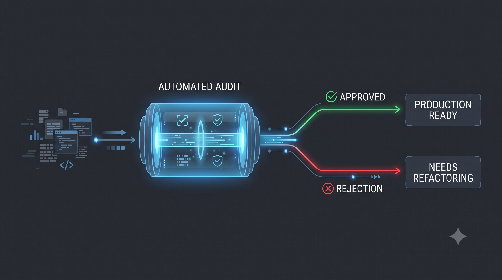

Série: Do Silício ao Chão de Fábrica — Episódio 02
O Programador Auditor

Tempo de leitura: 5 minutos
Há um novo arranjo se consolidando no desenvolvimento de software. Se as ferramentas de geração automática agora permitem criar blocos lógicos inteiros em segundos, surgiu um gargalo crítico na ponta final do processo: quem garante que esse castelo de cartas não vai desmoronar quando entrar em produção?
A Inteligência Artificial é brilhante na escala microscópica, resolvendo pequenos blocos lógicos com destreza. No entanto, ela é cega para o contexto de arquitetura a longo prazo e ignorante sobre as leis físicas do hardware no mundo real. É dessa lacuna que nasce a função mais importante do mercado contemporâneo: o Programador Auditor ou Arquiteto de Validação.
O trabalho do profissional sênior experiente mudou. Ele não passa mais o dia escrevendo código repetitivo do zero. Sua missão principal agora é auditar o fluxo gerado por humanos apoiados por robôs. Isso exige fazer perguntas duras e profundas sobre os fundamentos clássicos da computação:
- Há vazamento de memória (Memory Leaks)? A IA é excelente para criar loops matematicamente corretos, mas que acumulam referências inúteis e derrubam o servidor quando dez mil conexões simultâneas acontecem.
- O código respeita as regras reais de negócio? Um robô não entende as nuances da legislação fiscal brasileira ou a complexidade contábil de uma operação logística; ele apenas segue padrões estatísticos de texto.
- Onde estão os logs e a observabilidade? Se o sistema cair às três horas da manhã no meio de uma rota de entrega crítica, precisaremos saber exatamente em qual etapa o fluxo parou. A IA não prevê o caos operacional; ela assume que tudo sempre funcionará perfeitamente.
Essa mudança reposiciona a senioridade e a maturidade profissional. O domínio dos fundamentos inegociáveis — escalonamento, isolamento de falhas, tracing distribuído e segurança de rede — tornou-se a única barreira de proteção das empresas antes que o erro custe milhões de reais em perda operacional.
Em um céu onde a automação pilota o avião quase o tempo todo, o valor do Piloto Sênior não está em segurar o manche em linha reta, mas em saber exatamente o que fazer quando as leituras dos painéis falham e a tempestade exige o comando manual.
A Solução de Engenharia: A Esteira de Auditoria
O Programador Auditor não revisa código manualmente linha por linha; ele projeta uma esteira automatizada de validação. Utilizando testes de arquitetura estritos (como regras que garantem que nenhuma classe chame adaptadores externos de forma direta), analisadores de vulnerabilidade estática e perfis de testes de concorrência com foco em consumo de memória, a maior parte do código gerado por IA é validada antes de chegar à mesa do arquiteto.

Esquema do pipeline de auditoria e validação de código proposto.
A Lente do Negócio: O Papel de Garantia de Qualidade
Para o tomador de decisão, a contratação de profissionais sênior experientes atua como um seguro contra paradas críticas de operação. Da mesma forma que uma auditoria fiscal garante que as contas da empresa não tenham irregularidades silenciosas que levem a multas severas, o Auditor de Código evita falhas que paralisam a operação comercial (como sistemas de pagamento saindo do ar na Black Friday ou vazamento de dados que ferem leis gerais de proteção de dados). Pagar por senioridade na era da IA não é comprar velocidade de digitação; é comprar a garantia de que as engrenagens técnicas que sustentam o faturamento da sua empresa estão sendo auditadas com rigor profissional.
A IA pode acelerar a velocidade de voo, mas o cinto de segurança e a rota de pouso segura continuam dependendo do critério humano dos fundamentos.
Você tem atuado como um mero acumulador de código rápido ou como o auditor que evita o desabamento estrutural da sua empresa?
Lousa de Conceitos e Dicionário de Termos
- ArchUnit: Biblioteca Java voltada para a escrita de testes unitários automatizados que validam regras de arquitetura estritas e acoplamentos entre pacotes.
- Esteira de Auditoria Automatizada: Conjunto de verificações e testes dinâmicos e estáticos (como testes de arquitetura com ArchUnit) que validam a integridade estrutural do código de forma autônoma antes da revisão humana.
- Isolamento de Falhas: Prática arquitetural que impede que o colapso de um componente ou serviço específico se propague, derrubando o restante do sistema.
- Memory Leak (Vazamento de Memória): Ocorre quando um programa de computador gerencia incorretamente alocações de memória, falhando em liberar memória que não é mais necessária.
- Observabilidade: A capacidade de medir os estados internos de um sistema a partir do conhecimento de suas saídas externas (logs, métricas e traces).
- SonarQube: Plataforma de código aberto para inspeção e análise estática contínua de código, detectando falhas de qualidade, vulnerabilidades de segurança e bugs.
— Fim do Episódio 2. Retorne ao Episódio 1 ou continue no Episódio 3: Economia Real vs. Economia da Ilusão. Índice da série em: Chamada e Índice.
Nota do Autor: Segundo episódio da série "Do Silício ao Chão de Fábrica", analisando a maturidade profissional e o papel crítico da engenharia de fundamentos.